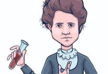
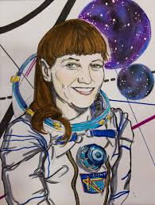
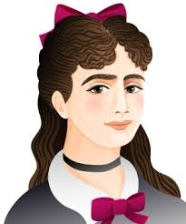

Interdisciplinar
Prepárate, porque cada estación será un reto diferente… ¡y necesitarás usar todo lo que sabes (y lo que vas a aprender)!
Física y Química 
Imagen: obtenida de https://www.freepik.es/fotos-vectores-gratis/marie-curie-dibujo
En esta prueba tendrás que convertirte en un auténtico detective de los elementos químicos. Tu misión será relacionar objetos cotidianos con los elementos que contienen.
Trabajarás sobre la figura de Marie Curie, una científica pionera en el estudio de la radiactividad, que descubrió dos elementos muy importantes: el polonio y el radio. Sus investigaciones cambiaron la ciencia y la medicina para siempre.
Biología y Geología
Imagen: obtenida de https://www.twinkl.es/teaching-wiki/margarita-salas
Aquí el reto estará relacionado con minerales y su composición. Tendrás que investigar, analizar y descubrir información clave para avanzar.
Conocerás a Margarita Salas, una de las científicas más importantes de España, que descubrió la ADN polimerasa, una herramienta fundamental en biotecnología.

Tecnología
Imagen: obtenida de https://www.artealmarusamx.com/2019/04/09/mexico-y-rusia-unidos-por-el-cosmos-iconos-de-la-cosmonautica/
En esta estación… ¡viajarás al espacio!
La protagonista será Svetlana Savítskaya, la primera mujer en realizar una caminata espacial.
Tu reto será trabajar con un programa de ordenador para identificar correctamente las vistas de una pieza. Si lo haces bien, conseguirás un código que te permitirá “reparar” el motor de la nave y acercarte un paso más a la salida.

Matemáticas
Imagen: obtenida de https://es.mathigon.org/timeline/germain
Aquí pondrás a prueba tu lógica con un tipo especial de números: los números primos de Sophie Germain.
Aprenderás que un número primo de este tipo cumple que, si haces el doble del número y le sumas uno, el resultado también es primo.
Tendrás que encontrar números escondidos por la sala y comprobar cuáles cumplen esta condición. No estarás solo: a lo largo del escape room tendrás pistas y ejemplos que te ayudarán a resolver el reto.
Cada prueba superada te acerca más a la salida… pero solo si trabajas en equipo, piensas con lógica y no te rindes. ¿Conseguiréis escapar a tiempo?